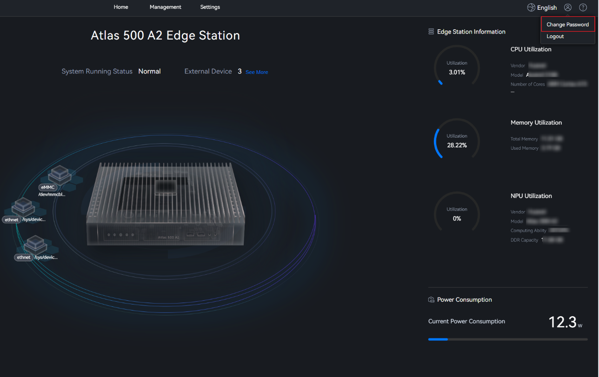

The Atlas IES home page displays the system running status, number and status of external devices, and system information, temperature, power consumption, alarms, CPU utilization, memory utilization, and NPU utilization of the Atlas 500 A2 edge station.

Name |
Description |
|---|---|
Menu |
Serve as the Atlas IES main menu and provides entries for management and settings. |
User name |
Provides entries for changing user passwords and logging out. |
Peripherals |
Displays the number of peripherals managed by the system.
|
System Information |
Displays the hostname, uptime, OS, firmware version, product asset label, MCU version, serial number, and NPU version. |
Alarms |
Displays the running status (critical, major, or minor) of the Atlas 500 A2 edge station. |
Temperature |
Displays the internal temperature, accelerator module temperature, CPU heating status, drive heating status, and USB hub heating status. |
Edge Station Information |
Displays the CPU utilization, memory utilization, and NPU utilization. |
Power Consumption |
Displays the current power consumption. |